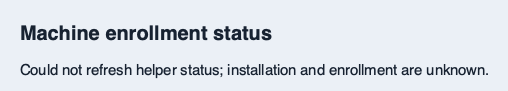
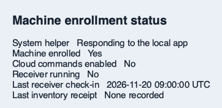

RedAgent 0.5.2 desktop development preview · November 27, 2026
Enrollment status guide
Use the guide to read what RedAgent’s local system helper reports. Opening or refreshing it does not generate or import keys, register an Apple key, or change command settings.
- Open the guide. On the Cloud Fleet tab, choose Enrollment status guide… to open Machine enrollment status.
The two read-only controls, captured from the actual Tk panel in an offline fixture. - Refresh the helper snapshot. After your Fleet administrator confirms setup is complete, choose Refresh status on the Cloud Fleet tab. The open guide updates with the tab. Responding to the local app means the local helper answered this request. If it is unavailable, its installation and enrollment status are unknown.

A synthetic refresh failure in the actual guide. Return to Cloud Fleet, confirm the helper is reachable, and choose Refresh status again. - Read the three states separately.
- Machine enrolled
- Whether the helper reports a machine enrollment profile.
- Cloud commands enabled
- Whether the helper’s command setting is on.
- Receiver running
- Whether the receiver was running when the helper answered. An enrolled machine can have a stopped receiver.

The actual Tk guide displaying synthetic values. The helper can retain the last receiver check-in while the receiver is stopped. - Compare the timestamps. Last receiver check-in is recorded on this computer. Last inventory receipt records the configured inventory destination’s accepted timestamp in the displayed environment. Read both in UTC. None recorded means there is no saved timestamp. A command outcome requires its own authenticated result. Select Close or press Escape when finished.


Legacy full-helper enrollment. An authorized administrator registers the public key with Apple outside RedAgent. The legacy workflow stores the CloudKit transport private key on the enrolled Mac, so it requires an operator-controlled Mac authorized to hold that key. This enrollment does not create a device-scoped Apple credential.